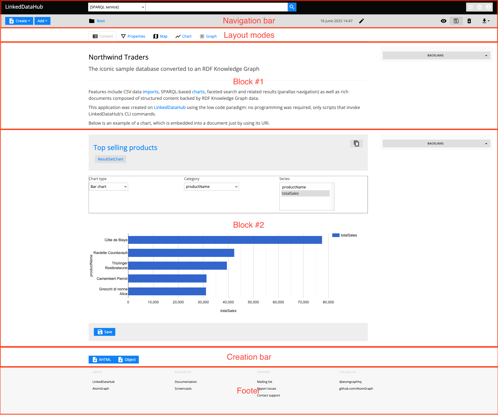
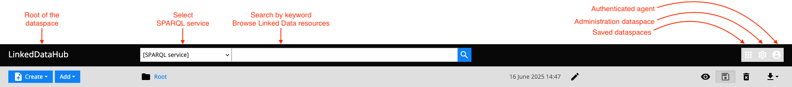
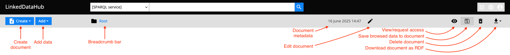

User interface
This guide walks through the main features of LinkedDataHub user interface. See the Data model guide for definitions of LinkedDataHub components such documents, content blocks, and resources.
User interface is only one of the interfaces LinkedDataHub provides. The other one is the Command line interface, which supports most of the UI actions.
The UI layout can be customized and extended using stylesheets.
Note that user interface features are subject to access control. For example, actions such as creating or editing documents are only available to users with the corresponding write access.

Navigation bar

The application title or logo in the top-left always links to the root container of the current application.
The address bar in the middle accepts the URI of a resource to navigate to. Entering an external
http:// or https:// URL loads it through the Linked Data proxy so that it can be browsed within LinkedDataHub.
On the right, dropdown menus provide access to the list of applications and to your user account.
Due to current web browser limitations, it is not possible to logout using client certificate authentication. As a workaround, you can close the browser, and click Cancel when asked to select a certificate the next time.
Action bar

The Create button opens a dialog through which documents can be created.
The path leading from the current document up the parent/child hierarchy to the root container is shown in the breadcrumb bar, where the current document is always the last breadcrumb. The user can always open any of the ascendant containers by clicking breadcrumbs left from the current one. The icon shows the type of the current document (container or item). A label is displayed when the URL currently being browsed is external.
Further to the right, the action bar displays buttons for performing actions on the current document.
Last but not least, the settings button provides a link to the administration application.
Only administration users have access to the administration application.
Left sidebar
The left sidebar is the main way to navigate your data. At the top, the search box finds resources within the current application that have the specified keyword in their titles, descriptions etc.; results are shown in a dropdown list. Below the search box, the sidebar offers complementary ways to browse the dataspace — by document hierarchy, by class, and through a few other data-driven views.
Document hierarchy navigation
Document tree shows the document hierarchy of the dataspace. By clicking on a container, it expands to show its children.
In a desktop layout mode, the document tree folds out when the mouse is moved to the left edge of the screen. In a responsive layout, it is always shown.
Class-based navigation
In addition to browsing by document hierarchy, you can navigate your data by class.
The Classes list shows the classes (rdf:type values) that actually occur in the dataspace, each labelled with the number of its
instances and ordered with the most-used classes first. Clicking a class opens a dialog
listing all instances of that class across the dataspace.
Class-based navigation is particularly useful when:
- You want to see all instances of a particular type across your entire dataspace
- You need to browse data organized by domain concepts rather than container structure
Because the list is derived from the data itself, it reflects whatever types are present — you do not need to define an ontology or class hierarchy. It also respects your access control settings: you only see classes and instances you are authorized to access.
Other views
Below the classes, the sidebar provides a couple of additional data-driven views of the dataspace:
- Geo
- Opens a dialog listing all resources in the dataspace that have geographic coordinates.
- Latest
- Opens a dialog listing the most recently created resources in the dataspace, newest first.
Right sidebar
A right sidebar appears alongside the main view to show navigation into and out of the current data:
- Backlinks
- In properties mode, lists resources that link to a resource in the current document — that is, resources that have a property whose value is the current resource. This complements the outgoing properties shown in the main view.
- Related results
- For view result sets, parallax navigation lets you jump from the current results to a related set by following a selected property (for example, from a set of products to the companies that supply them). It works together with the view's faceted search.
Layout modes
The active document layout mode is displayed, and can be changed using, the nav tabs at the top of the page.
Currently supported document layout modes:
- Content
- List of content blocks. Shown only if the current document has items in its content list or there is a content template defined for its type.
- Properties
- The most detailed view showing every property/value of every resource in the current document.
- Map
- Shows an interacitve map with all resources in the current document that have geo coordinates
- Chart
- Renders the metadata of the resources in the current document as a chart with (multiple chart types are supported, such as table, scatter chart, timeline etc.)
- Graph
- Renders resources in the current document graphically as nodes in an interactive 3D network using a force-directed layout. Clicking a node shows its details, double-clicking loads the resource, and right-clicking a URI node loads its backlinks (resources pointing at it). The canvas can be toggled to fullscreen (press Esc to exit), and the graph state is preserved across search and filter re-renders.
Document tabs
LinkedDataHub navigates within a single page. When you follow a link to an external document (for example a resource fetched through the Linked Data proxy), it opens in its own tab so that several documents can be kept open side by side. A sticky tab bar appears at the top of the page once the first external tab is opened.
Each tab keeps its own content pane, and modal dialogs (such as creation and edit forms) are scoped to the active tab pane. Switching between tabs is cached, so returning to a previously opened tab does not re-fetch it. Closing a tab removes its pane and falls back to the base document's tab.
Creation bar
The creation bar serves different functions depending on the current mode:
- Content
- Appends new content blocks to the page
- Properties
- Creates new resource of the selected type